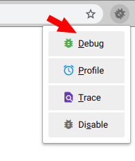
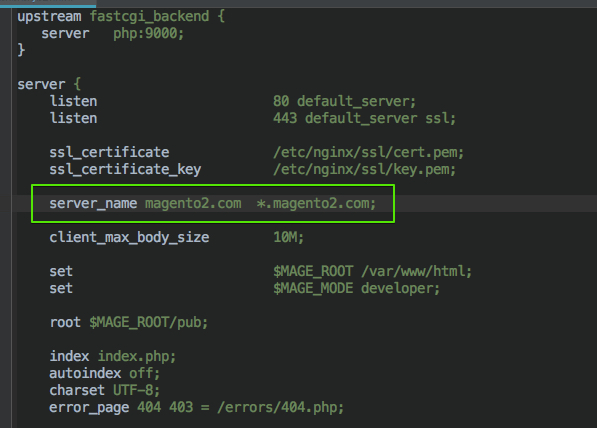
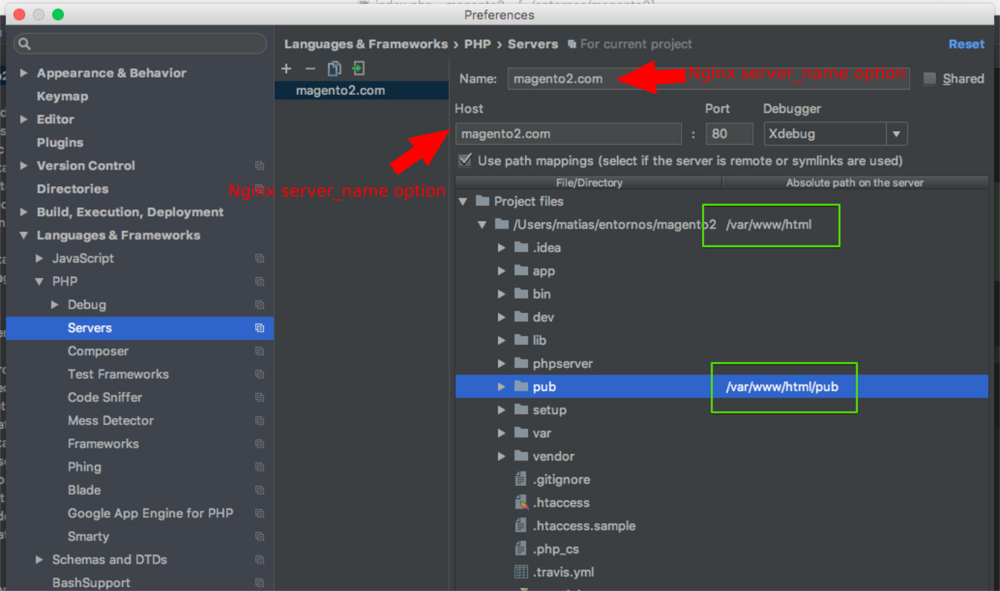
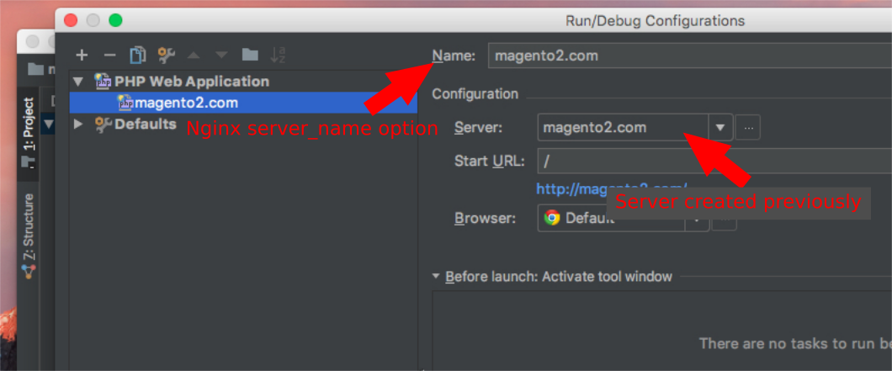
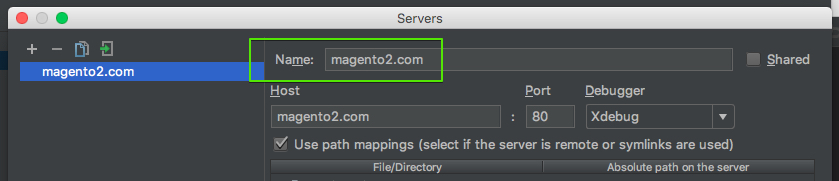

Requeriments and dependencies
- Docker
- docker-compose
- docker-sync (only macOS)
How to install docker-sync on macOS
1 | |
How to install rsync
- on macOS
1 | |
- on Debian
1 | |
How to configure Xdebug
Configuring xdebug by Browser
1) The first step is to install the Browser Toolbar and enable listening for PHP Debug Conections

2) After that, the server name must be configured in Nginx.
To achieve this, please modify the nginx config file (file ended in .conf) setting the server_name attribute.
The file can be located running the command warp info in your root project folder with the "Nginx configuration file" flag

3) Now is time to configure the Web Server in PHPStorm IDE
Please, go to: File -> Settings->Languages & Frameworks -> PHP -> Servers
Add a new Server clicking on the plus (+) button and set the following fields:
Name:Must be the same name configured in Nginxserver_namefieldHost:Must be the same value configured in Nginxserver_namefieldPort:Should be 80 if you are using HTTP or 443 if you ar using HTTPSDebbuger:Choose Xdebug
After configure those values, check the option Use path mappings and configure the right paths. See the table below
| File/Directory (Your computer - host) | absolute path on the Servers (inside the container) |
|---|---|
| /path/to/current/project/ | /var/www/html/ |
| /path/to/current/project/pub/ | /var/www/html/pub/ |

4) Once that the Web Server has been configured, the PHP Web Aplication must be created, so go to Menu: Run -> Edit Configurations
Create a new PHP Web Application clicking on the plus (+) button and select the PHP Web Application option, then set the following fields:
Name:Must be the same name configured in Nginxserver_namefieldServer:Select the server created on previous step

Configuring xdebug by Console (cli)
Using Xdebug by console requires to set PHP_IDE_CONFIG environment var with same Nginx server_name value.
Open the .env file located in your root project folder and set the value like this sample:
1 | |
Where magento2.com is the server_name set previously in Nginx configuration

Configuring the Xdebug php extension (ext-xdebug.ini)
Plase located in your root project folder, execute the command: warp php info, you will see the location of ext-xdebug.ini file.
Open the file, for example located in .warp/docker/config/php/ext-xdebug.ini
Finally, make sure to configure your xdebug correctly, the most important options are:
- xdebug.remote_enable=1
- xdebug.remote_port=9000
- xdebug.remote_connect_back=0
- xdebug.idekey='PHPSTORM'
- xdebug.remote_host=172.17.0.1
The field xdebug.remote_host depends of your Operating System and your local configurations:
Linux: The IP should be grabbed from Docker network interface, ussually called docker0
You can get it running the command ifconfig for instance:
1 2 3 4 5 6 7 8 | |
Mac OS X: The IP should be xdebug.remote_host=10.254.254.254 added as an alias following the next steps:
1- Create the alias
1 | |
2- Add the network configuration to OS X launch daemons, to create the alias automatically on system boot process.
1 | |
How to use Composer
1 | |
Setting up the Cron Jobs
Editing The Crontab File
- To check whether you have a crontab file run the following command:
1 | |
- To create or edit a crontab file run the following command:
1 | |
- The file that opens has a lot of information but the key part is the example just before the end of the comments section (comments are denoted by lines beginning with #).
1 | |
Example:
1 | |
Warning
a blank line is required at the end of this file!